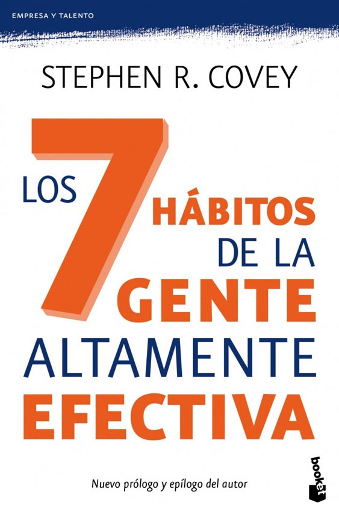
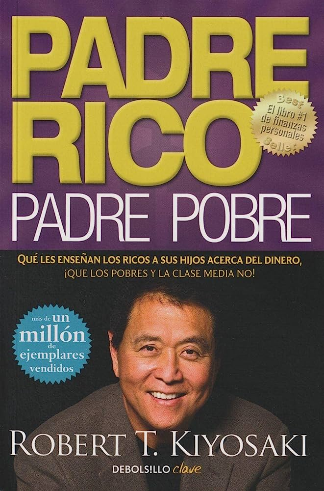

| PORTADA | TITULO | AUTOR | SINOPSIS | ENLACE DE DESCARGA |
| El poder del ahora | Eckhart Tolle | Eckhart Tolle explora la importancia de vivir en el presente y cómo liberarse de la influencia del pasado y las preocupaciones futuras para encontrar la paz interior. | LEER | |
|  | Los 7 hábitos de la gente altamente efectiva | Stephen R. Covey | Stephen R. Covey presenta siete hábitos fundamentales que pueden ayudarte a lograr el éxito personal y profesional. Estos hábitos se centran en principios como la responsabilidad, la planificación y la efectividad en las relaciones. | LEER |
|  | Padre rico, padre pobre | Robert T. Kiyosaki | Robert T. Kiyosaki comparte las lecciones financieras que aprendió de su padre biológico (padre pobre) y de un amigo de su padre (padre rico), brindando consejos para alcanzar la independencia financiera y la libertad económica. | LEER |
| El monje que vendió su Ferrari | Robin Sharma | A través de una fábula inspiradora, Robin Sharma enseña lecciones sobre la búsqueda de la felicidad, el propósito de la vida y el equilibrio entre el éxito material y la paz interior. | LEER | |
| La magia del orden | Marie Kondo | Marie Kondo presenta un enfoque revolucionario para organizar y ordenar el hogar, creando así un espacio físico y mental armonioso. Proporciona consejos prácticos y técnicas para eliminar el desorden y mantener una vida más ordenada. | LEER |